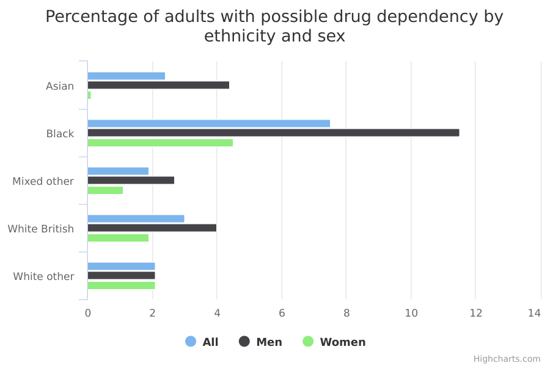

Drug dependency in adults
The main facts and figures show that:
-
Black adults were most likely to have a drug dependency in the year prior to the survey, while White British adults were least likely
-
among males, Black adult males were most likely to have a drug dependency in the year prior to the survey, while White British adult males were least likely
-
no other meaningful differences between other ethnic groups or between sexes were observed in terms of drug dependency (other observed differences aren’t reliable, most likely because of the small sample sizes involved)
Things you need to know
The survey covers adults aged 16 or over who live in private households. A household survey that measures drug use and dependence won’t include several groups in which drug use occurs. These include students in halls of residence, the homeless, and those living in institutional settings such as hospitals and prisons. Some drug users living in private households may also be less likely to participate in surveys, as they may lead chaotic lives that make them less available, able or willing to answer survey questions (Lader 2015; cited in APMS 2014). There were 6,902 respondents to the drug dependency questions on the survey.
Keep in mind when making comparisons between ethnic groups that all survey estimates are subject to a degree of uncertainty as they are based on a sample of the population. The degree of uncertainty is greater when the number of respondents is small, so it will be highest for minority ethnic groups.
The ethnic groupings used here are broad; there is no breakdown of data for the more specific ethnic groups each contains. Some of the specific ethnic groups have very different experiences to one another. For example, the Black/Black British group could include both recent migrants from Somalia and Black people born in Britain to British parents.
What the data measures
This data measures the percentage of adults (aged 16 or older) in different broad ethnic groups in England who experienced possible drug dependency in the month and year prior to being surveyed.
Those surveyed were asked if they had within the past year used one of 8 drug types: cannabis, amphetamines, crack (free base cocaine), cocaine, MDMA (ecstasy), tranquillisers, opiates and inhalants (volatile substances). These drugs have been identified as prone to abuse that leads to dependency. Respondents were then asked 5 questions based on the Diagnostic Interview Schedule to assess symptoms of drug dependence. Covering drug use over the past month and over the past year, the questions covered:
- daily use for 2 weeks or more
- sense of need or dependence
- inability to abstain
- increased tolerance
- withdrawal symptoms
A positive response to any of the items was used as an indicator of possible drug dependence.
A range of new psychoactive substances (NPS) have entered the drugs market but were not assessed in this survey. Uncertainty over their content and rapid changes in what is available makes measuring the use of these substances in surveys extremely challenging.
Why these ethnic categories were chosen
For this data, the number of people surveyed (the ‘sample size’) was too small to draw any firm conclusions about detailed ethnic categories. Therefore, the data is broken down into the following broad groups, based on the ONS harmonised ethnic group questions for use on national surveys.
- White British
- White Other
- Black/Black British
- Asian/Asian British
- Mixed/Multiple and Other
Drug dependency amongst adults in England 2014

Percentage of adults with possible drug dependency in England 2014 by ethnicity and sex
| All | Men | Women | |
| Asian | 2.4 | 4.4 | 0.1 |
|---|---|---|---|
| Black | 7.5 | 11.5 | 4.5 |
| Mixed other | 1.9 | 2.7 | 1.1 |
| White British | 3.0 | 4.0 | 1.9 |
| White other | 2.1 | 2.1 | 2.1 |
Summary
This data shows that:
-
7.5% of Black people (including both sexes) reported at least one sign of drug dependency in the past year, compared with 3% of White people
-
11.5% of Black males reported at least one sign of drug dependency in the past year, compared with 4% of White British males
-
while differences were observed between other ethnic groups or sexes, none were reliable (none were “statistically significant”) - most likely due to small sample sizes
Download image and data
Methodology and type of data
Type of data
Survey
Purpose of data source
The Adult Psychiatric Morbidity Survey (APMS) series provides England's National Statistics for the prevalence of mental illness and treatment access in the adult household population.
Methodology
Questions about drug use were asked using a computer-assisted self-completion interview (CASI), as in the 2000 and 2007 surveys. They covered lifetime experience of 15 types of named drug, together with use in the past year. The drugs asked about are those considered to be mostly widely used. New psychoactive substances (NPS) were not included.
Each survey involved interviewing a large stratified probability sample of the general population, covering people living in private households. The full adult age range was covered, with the youngest participants aged 16 and the oldest over 100.
The two-phase survey design involved an initial interview with the whole sample, followed up with a structured assessment carried out by clinically trained interviewers with a subset of participants. People were assessed or screened for a range of different types of mental disorder, from common conditions like depression and anxiety disorder through to less common neurological and mental conditions such as psychotic disorder, attention-deficit hyperactivity disorder (ADHD), and autism spectrum disorder (ASD).
The use of a survey to diagnose mental health conditions is not as reliable as a diagnosis made using a clinical interview. The assessments used have been validated, however, and are among the best available.
The resulting statistics for drug dependency have been age-standardised. This is because drug dependency can be related to age and the age profile can differ considerably between ethnic groups. This adjustment allows comparisons to be made between ethnic groups as if they had the same age profile.
The survey covers people who live in private households. It doesn’t include those who live in institutional settings (such as hospitals or prisons) or in temporary housing (such as hostels or bed and breakfasts) or those who sleep rough. People living in such settings are likely to have higher drug use than those living in private households.
Where a selected participant could not take part in a long interview due to a physical or mental health condition, some information about this was recorded by the interviewer on the doorstep. This information may be biased due to it having been collected often from another household member.
Socially undesirable or stigmatised feelings and behaviours may be underreported. While this is a risk for any study based on self-report data, the study goes some way to minimising this by collecting particularly sensitive information in a self-completion format.
Some people selected for the survey could not be contacted or refused to take part. The achieved response rate (57%) is in line with that of similar surveys (Barnes et al. 2010; cited in APMS 2014). Weighting helps take account of those who were selected for the survey but didn’t take part.
Weighting is used to adjust the results of a survey to make them representative of the population and improve their accuracy. For example, a survey which contains 25% females and 75% males will not accurately reflect the views of the general population which we know is around 50% male and 50% female.
More detailed information on the weighting used here can be found on page 24 of the Methods chapter of the Adult Psychiatric Morbidity Survey 2014 .
Confidence intervals The confidence intervals for each ethnic group are available in the ‘download the data’ section and also available from the CSV downloads for ‘Percentage of adults who have experienced drug dependency by sex and broad ethnic group, England 2014’.
3% of White British adults surveyed experienced any drug dependency in the 12 months prior to the survey. This is a reliable estimate of the percentage of White British adults in England who experienced any drug dependency in that time period, but because the APMS results are based on a random sample of adults aged 16 or older it’s impossible to be 100% certain of the true percentage.
It’s 95% certain, however, that somewhere between 2.4% and 3.6% of all White British adults in England experienced any drug dependency in that time period. In statistical terms, this is a 95% confidence interval. This means that if 100 random samples were taken, then 95 times out of 100 the estimate would fall in this range (ie between the upper and lower confidence interval). But 5 times out of 100 it would fall outside this range.
The smaller the survey sample, the more uncertain the estimate and the wider the confidence interval. For example, fewer adults from the Black/Black British ethnic group were sampled for this survey than White British adults, so we can be less certain about the estimate for the smaller group. This greater uncertainty is expressed by the wider confidence interval of between 4.4% and 12.6%.
Rounding
Percentages have been rounded to 1 decimal point
Quality and methodology informationFurther technical information
Data source details
Source
Adult Psychiatric Morbidity Survey: Survey of Mental Health and Wellbeing, England, 2014
Department
NHS Digital
Type of statistic
National statistic
Publication frequency
Every 7 years (further publications dependent on further surveys being commissioned)
Suppression rules
There is no risk to disclosure as the analysis is based on broad ethnic groups, without further disaggregation. Therefore no data has been suppressed.
Download the data
apms-drug-dependency.csv
This file contains the following: ethnicity, year, geography, sex, value, denominator, numerator, confidence intervals, and sample size
View this page as JSON